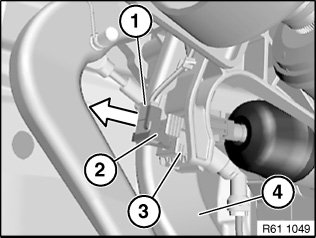
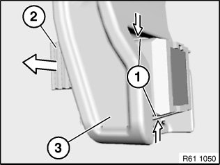

Brake Light Switch: Service and Repair
61 31 310 Replacing Brake Light Switch

Necessary preliminary tasks:
- Remove trim panel for pedal assembly.

Unfasten plug connection (1) and disconnect.
Pull brake light switch (2) in direction of arrow out of brake light switch holder (3).
Installation:
- Press brake pedal (4) to floor.
- Slide brake light switch (2) as far as it will go into brake light switch holder (3).
- Grip brake light switch holder (3), slowly return brake pedal (4) to starting position and pull back to stop.

NOTE:
Removing brake light switch holder (2):
Press brake pedal.
Press catches (1) together and unclip brake light switch holder (2) from bearing block (3).